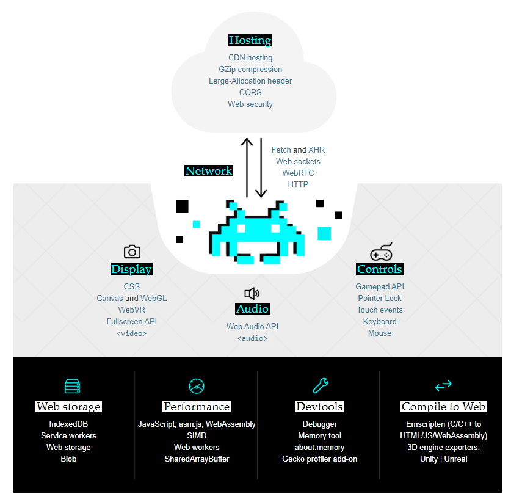
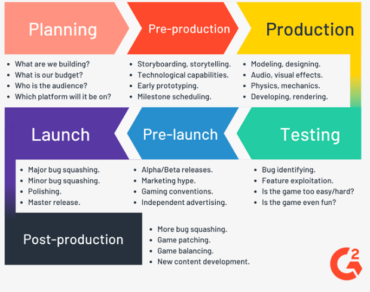

- All the documentation in this page is taken from MDN
- All the documentation about What is Game Development is taken from freeCodeCamp
- Ultimate Guide to Getting Started in Game Development dvnc.tech
Introduction
Gaming is one of the most popular computer activities. New technologies are constantly arriving to make it possible to develop better and more powerful games that can be run in any standards-compliant web browser.

What Is Game Development?
Gaming is one of the most popular computer activities. New technologies are constantly arriving to make it possible to develop better and more powerful games that can be run in any standards-compliant web browser.
Game Development is the art of creating games and describes the design, development and release of a game. It may involve concept generation, design, build, test and release. While you create a game, it is important to think about the game mechanics, rewards, player engagement and level design.
- A game developer could be a programmer, a sound designer, an artist, a designer or many other roles available in the industry.
- Game Development can be undertaken by a large Game Development Studio or by a single individual. It can be as small or large as you like. As long as it lets the player interact with content and is able to manipulate the game’s elements, you can call it a ‘game’.
- To get involved in the Game Development process, you do not need to write code. Artists may create and design assets, while a Developer might focus on programming a health bar. A Tester may get involved to see that the game works as expected.
- To resolve problems that game frameworks had, tools like libGDX and OpenGL were developed. They helped game development to be a lot faster and easier, providing lots of pre-made functions and features. However, it was still hard to enter the industry or understand a framework for someone coming from a non-programmer background, a common case in the game development scene.
- That was when game engines like Construct, Game Maker, Unity and Unreal were developed. Generally, an engine has everything that a framework had, but with a more friendly approach by using a graphic user interface (GUI) and helping with the graphic development of the game.
- In some cases, like Game Maker and Construct, the amount of pre-made functions are so big that people with no previous programming skills could build a game from scratch, really expanding the scene and making game development accessible for almost anyone.
What skills do Game Developers Need?
This really depends on what kind of job the developer plans on seeking
If you want to work for major companies like Blizzard, EA, or Ubisoft, then it is better to pick one specific skill area to specialize in. If you plan to work at a startup studio then it is better to learn one skill really well and pick a secondary skill to bolster your resume.
NOTE: If you want to create your own studio it’s honestly best to just learn to make games (games don’t require the best art or the most mind-blowing mechanic, it’s better to focus on finishing the product and being unique).
Game Development Hard Skills
- Art
- Design
- Programming
- Marketing
- Choose Between 2D and 3D
- Finding an art style (by referencing games)
- Practice, Practice, Practice
- Make, Make, Make
- Find/Create a game project
Develop Web Games
Welcome to the MDN game development center! In this area of the site, we provide resources for web developers wanting to develop games. You will find many useful tutorials and technique articles in the main menu on the left, so feel free to explore.
We've also included a reference section so you can easily find information about all the most common APIs used in game development.
NOTE: Creating games on the web draws on a number of core web technologies such as HTML, CSS, and JavaScript. The Learning Area is a good place to go to get started with the basics.
Port Native Games to the Web
If you are a native developer (for example writing games in C++), and you are interested in how you can port your games over to the Web, you should learn more about our Emscripten tool — this is an LLVM to JavaScript compiler, which takes LLVM bytecode (e.g. generated from C/C++ using Clang, or from another language) and compiles that into asm.js, which can be run on the Web.
- About Emscripten for an introduction including high-level details.
- Download and Install for installing the toolchain.
- Emscripten Tutorial for a tutorial to teach you how to get started.
Game Engines
Many developers choose to develop a game using a Game Development Engine. Game Engines can make the process of creating a game much easier and enable developers to reuse lots of functionality. It also takes care of rendering for 2D and 3D Graphics, physics and collision detection, sound, scripting and much more.
Some Game Engines have a very steep learning curve such as CryEngine or Unreal Engine. Yet, other tools are very accessible to beginners and some do not even need you to be able to write code to create your game, e.g. Construct 2.
The Unity Game Engine ranges somewhere in the middle, while it is beginner friendly, some popular and commercial games have been built using Unity (e.g. Overcooked, Superhot).
The BuildBox game engine is basically for developing hypercasual games.
Typical Game Engines
- CryEngine
- Unreal Engine
- Unity Game Engine
- Game Maker
- Construct 2 or 3
- Twine
- Source
- Frostbite
- Buildbox
Example
- For a list of web game examples, see our examples page
- Also, check out games.mozilla.org for more useful resources!
7 Stages of Game Development
While video game development is chaotic in nature, there are still structures and frameworks in place to keep studios running efficiently and projects on track to be completed. The stages of game development go as followed:
What are the stages of game development?
- Planning
- Pre-production
- Production
- Testingr
- Pre-launch
- Launch
- Post-Production

- To read more on the 7 stages of Game Development The 7 Stages of Game Development by Learning Hub